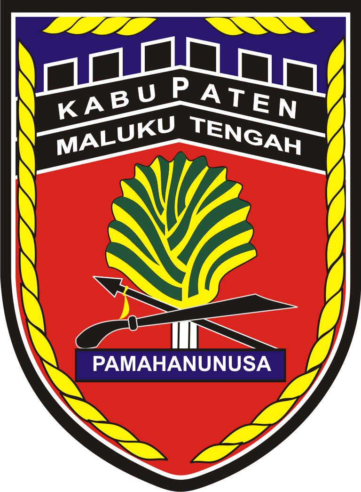

SOP Legal Drafting
Tahapan, mekanisme, dan prosedur penyusunan produk hukum daerah.
↗ Akses SOPGoogle Drive • SOP Legal Drafting

Integrasi Tahapan, Dokumen Baku, dan Layanan Konsultasi pada Bagian Hukum Sekretariat Daerah Kabupaten Maluku Tengah.
Gunakan tautan berikut untuk mengakses layanan dan dokumen pendukung proses legal drafting produk hukum daerah.
Tahapan, mekanisme, dan prosedur penyusunan produk hukum daerah.
↗ Akses SOPFormat, contoh dokumen, dan persyaratan penyusunan produk hukum daerah.
↗ Akses DokumenPengajuan usulan produk hukum dan unggah berkas melalui layanan online.
↗ Buka OPSIKUSampaikan pertanyaan atau konsultasi terkait penyusunan produk hukum daerah.
↗ Konsultasi SekarangAkses layanan harmonisasi rancangan peraturan perundang-undangan melalui Kementerian Hukum.
↗ Buka e-HarmonisasiAkses layanan fasilitasi pembentukan produk hukum daerah melalui Kementerian Dalam Negeri.
↗ Buka e-PerdaGunakan SOP Legal Drafting sebagai acuan. Tahapan dapat menyesuaikan jenis produk hukum dan ketentuan yang berlaku.
Identifikasi kebutuhan dan penyusunan konsep.
Penyusunan rancangan dan kelengkapan dokumen.
Proses harmonisasi melalui Kanwil Kementerian Hukum Maluku.
Proses sesuai ketentuan melalui Biro Hukum Provinsi Maluku atau mekanisme yang berlaku.
Penetapan dan penomoran sesuai prosedur.
Catatan: Tahapan dan kewajiban fasilitasi/evaluasi mengikuti jenis rancangan serta ketentuan peraturan perundang-undangan yang berlaku.